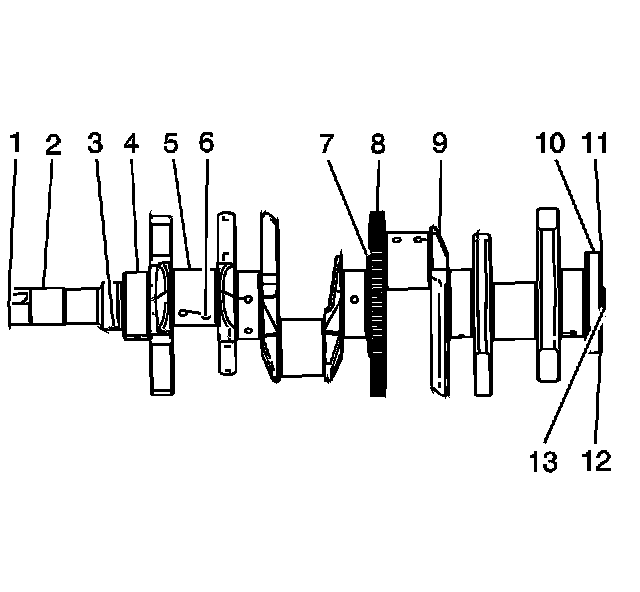
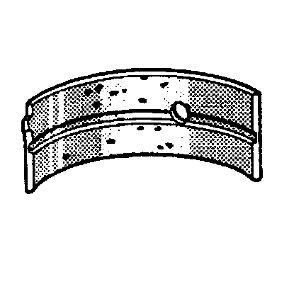
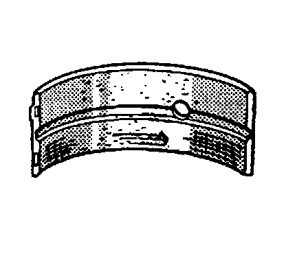
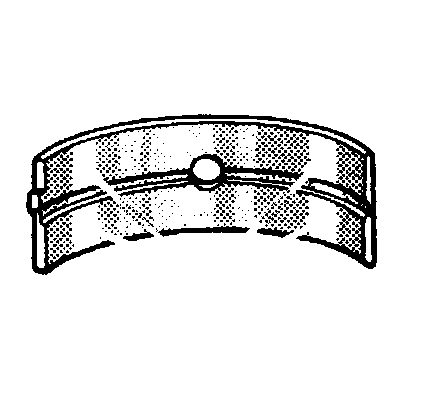
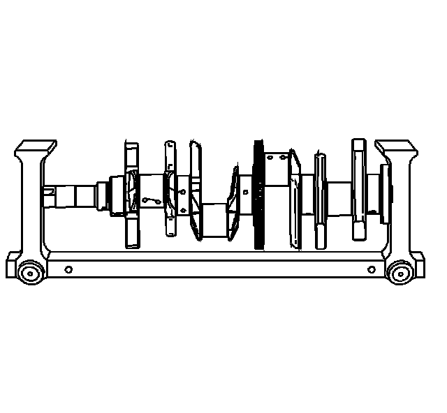
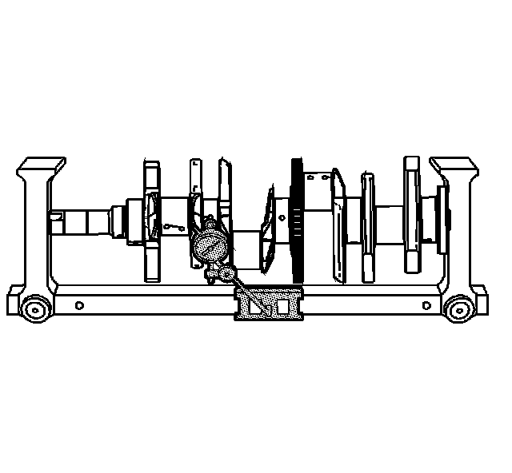
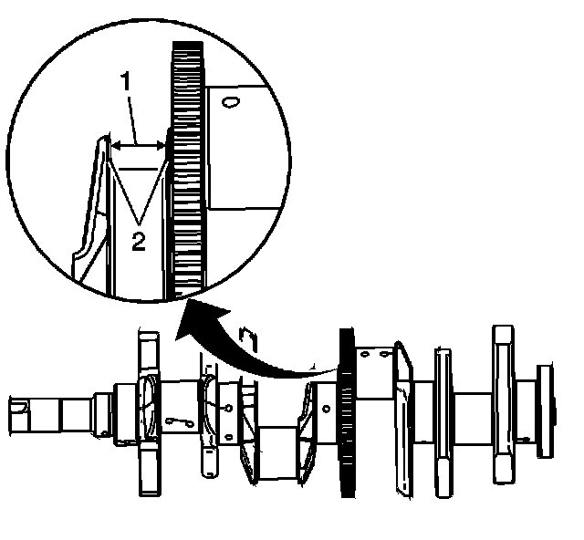
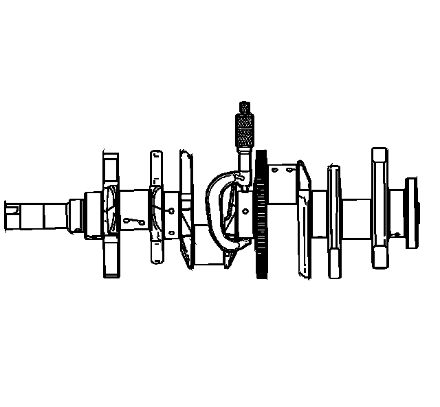
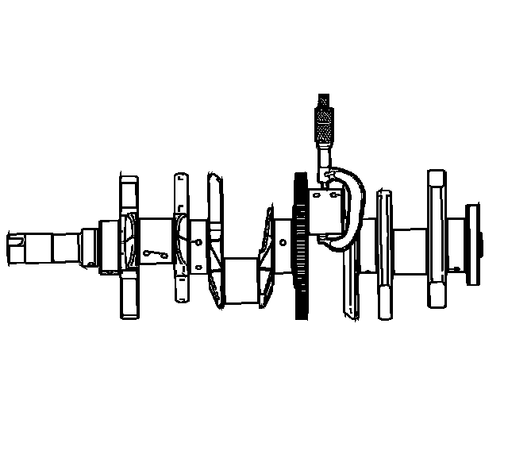
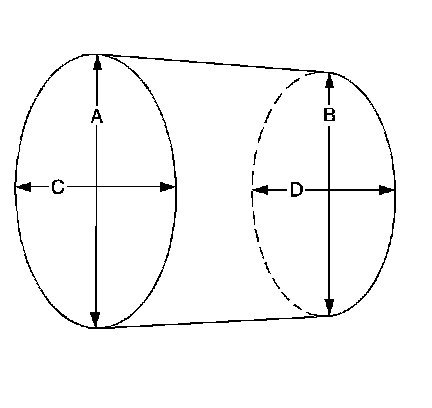

50. Crankshaft and Bearing Cleaning and Inspection
Crankshaft and Bearing Cleaning and Inspection
Cleaning Procedure
1. Clean the following components in solvent:
* Crankshaft bearings
* Connecting rod bearings
* Crankshaft journals
* Crankpin journals
* Crankshaft oil passages
* Crankshaft threaded holes
Caution: Refer to Safety Glasses Caution (Safety Glasses Warning) .
2. Dry the following components with compressed air:
* Crankshaft bearings
* Connecting rod bearings
* Crankshaft journals
* Crankpin journals
* Crankshaft oil passages
* Crankshaft threaded holes
Visual Inspection

1. Perform the following visual inspections:
* Inspect the crankshaft balancer bolt hole (1) for thread damage
* Inspect the crankshaft balancer mounting area (2) for damage
* Inspect the crankshaft sprocket pin hole (3) for damage
* Inspect the crankshaft main journals (4) for damage
* Inspect the crankshaft connecting rod journals (5) for damage
* Inspect the crankshaft oil passages (6) for obstructions
* Inspect the crankshaft main bearing thrust wall surfaces (7) for damage
* Inspect the crankshaft reluctor ring teeth (8) for damage
* Inspect the crankshaft counterweights (9) for damage
* Inspect the crankshaft rear main oil seal surface (10) for damage
* Inspect the crankshaft engine flywheel mounting surface (11) for damage
* Inspect the crankshaft engine flywheel bolt holes (12) for thread damage
* Inspect the crankshaft pilot hole (13) for damage
2. Repair or replace the crankshaft as necessary.
Crankshaft Bearing Inspection
Important: All connecting rod and main journal bearings that have been used in a running engine must be replaced. Never re-use the crankshaft or connecting rod bearings.
The following bearing wear conditions should be used to diagnose engine operating conditions or root cause of a condition.

1. Inspect for fatigue indicated by craters or pockets. Flattened sections on the bearing halves also indicate fatigue.

2. Inspect for excessive scoring or discoloration on both front and back of the bearing halves.
3. Inspect the main bearings for dirt imbedded into the bearing material.

4. Inspect for improper seating indicated by bright, polished sections.
Crankshaft Measurement
Tools Required
J 7872 Magnetic Base Dial Indicator

1. Using a suitable fixture, support the crankshaft.

2. Install the J 7872 .
3. Measure the crankshaft runout using J 7872 . Refer to Engine Mechanical Specifications (Specifications) .

4. Measure the crankshaft thrust wall width (1) for wear using an inside micrometer. Refer to Engine Mechanical Specifications (Specifications) .
5. Measure the crankshaft thrust wall surface (2) for runout using J 7872 . Refer to Engine Mechanical Specifications (Specifications) .
6. If the crankshaft thrust walls are damaged or worn beyond specifications, replace the crankshaft. No machining of the crankshaft thrust wall is allowed.

7. Check the crankshaft main journals for undersize using an outside micrometer.

8. Check the crankpins for undersize using an outside micrometer.
9. Compare your measurements with those listed in the Engine Mechanical Specifications (Specifications) . If the crankshaft journals are worn beyond the specified limits, the crankshaft must be replaced. Crankshaft machining is not allowed and there are no undersized bearings available for service.

10. Measure the main bearing and crankpin journals for out-of-round using the following procedure:
1. Using an outside micrometer, measure the journal at the extreme front and rear locations on the journal. Call these points A and B.
2. Measure the journal in two new locations exactly 90 degrees from the first points. Call these points C and D.
3. Subtract A from C and B from D. The differences will indicate journal out-of-round.
4. The out-of-round should not exceed 0.005 mm (0.00020 in) maximum.
5. If the specifications are exceeded, replace the crankshaft.
11. Measure the main bearing and crankpin journals for taper using the following procedure:
1. Using an outside micrometer, measure the journal at the extreme front (A) and rear (B) of the journal parallel to the crankshaft centerline.
2. Subtract the smallest from the largest measurement. The result will be the journal taper.
3. If the main bearing journal taper exceeds 0.008 mm (0.00032 in), replace the crankshaft.
4. If the crankpin journal taper exceeds 0.008 mm (0.00032 in), replace the crankshaft.